What it does
Tareekh keeps every matter you appear in and does the tiring part of practice for you. It finds each next date on the courts' public case-status pages, files every court order in a folder for the case, reminds you of hearings and fees, puts every date in your Google Calendar, and lets you send your client a WhatsApp reminder in one tap. The court's page is filled in out of sight: you only type the CAPTCHA, on Tareekh's own screen.
⚖️ Every court
District courts of every state, all 25 High Courts with their 45 benches and sides, and the Supreme Court of India.
🧾 Case synopsis
A date-wise synopsis of the whole case from all its orders, with the AI cost shown before it runs.
🔍 Ask AI to find a case
In your own words or from a summons: checks your cases first, then suggests the exact search.
💡 Ask about a case
Questions about a whole case; only the matching passages of its orders are sent to the AI.
⚡ Check here
Only the court's CAPTCHA appears in Tareekh. Type it, and the next date, stage, hearings and orders are updated.
🌙 Check all here
At 6:30 pm, all of the day's hearings, one after another, with a summary: checked, updated, unchanged.
🔎 Search inside the app
By case type, number and year; party name; filing or diary number; or CNR. Case types picked from each court's own list.
📂 Every order, offline
All orders of a saved case are downloaded into its own folder and open any time, even without internet.
✨ Explain an order
What the court decided and what the client must do, in simple English, Bengali or Hindi, ready to share on WhatsApp.
🏛️ Appeal: where and by when
The forum, the provision, the limitation period and the last date, with a calendar entry for the deadline.
💬 Ask about an order
Questions and follow-ups about any order, answered from the order's own words.
📄 Summons to case
Share a summons, notice, order or WhatsApp photo: the court, case number, date and parties are read and filled in.
🗓️ Calendar and reminders
Hearings in Google Calendar, 8 am and 8 pm lists, fee reminders, clash warnings, and notes with their own reminders.
📲 WhatsApp to client
The hearing reminder typed in your own words, with case, court, date and purpose; you tap Send.
📋 Cause lists and import
High Court, district and Supreme Court cause lists as PDFs; your whole eCourts app "My Cases" list imported in one step.
What's new
2.4 · AI for whole cases, at the lowest cost. Every order is read on the phone, straight from the PDF (OCR only for scanned pages), and indexed on the phone. Case synopsis (date-wise, cost shown first, each order summarised once), Ask about this case (only matching passages sent), Ask AI to find a case (from your words or a summons; "already in your cases" or "new case"), Ask AI about my cases, and cause lists in plain words.
2.3 · Check here. Next to Check on eCourts on every case, Check here fills in the court's page out of sight and shows only its CAPTCHA; the case, its calendar entry and its orders are then updated, with a one-line summary of what changed. Check all here does the evening's checks one after another. Also in 2.3: Test connection for your AI key, which finds the right server and a model your key may use.
2.2 · AI help for orders. Every saved order has a ⋮ menu: Explain in simple terms (English, বাংলা, हिन्दी), Appeal: where and by when and Ask about this order. These use the AI service you connect (Google Gemini, OpenAI, Claude, Qwen or Kimi) with your own API key; without one, Tareekh asks you to connect a service first. Appeal guidance must be verified before filing.
2.1 · Search inside Tareekh. For district courts, the High Courts and the Supreme Court, with the court's CAPTCHA shown in the app and the case opening on Tareekh's own screen.
Install in four steps
- Download the app on your Android phone with the button above.
- Open the downloaded file (Tareekh-2.4.apk). The first time, Android asks to allow installs from your browser or Files app: allow it once, then tap Install. A new version installs over the old one and keeps your cases, notes and orders.
- Open Tareekh and tap Allow for notifications and calendar. Set Battery › Unrestricted for Tareekh so the 6:30 pm check always comes (Xiaomi, Oppo, Vivo and Realme phones need this).
- Add your cases: Settings › Import your eCourts app My Cases export, share documents to Tareekh, or type them the way you write them (TS 245/2026 Baruipur, WPA 12345/2024).
For faster court pages, set your phone's Settings › Network › Private DNS to dns.google: some internet providers take five seconds to find the eCourts servers.
Using it
Checking next dates
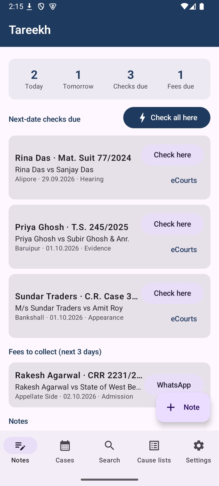
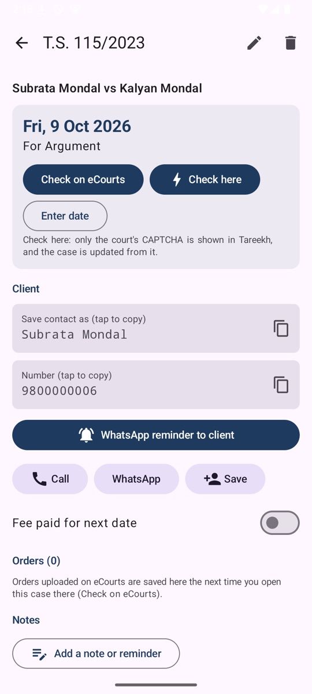
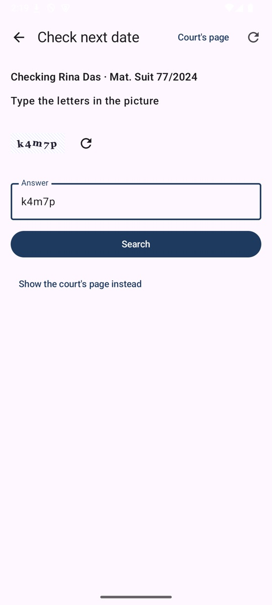
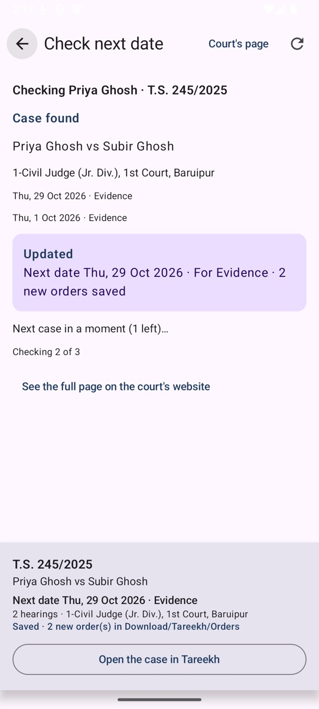
Searching a court
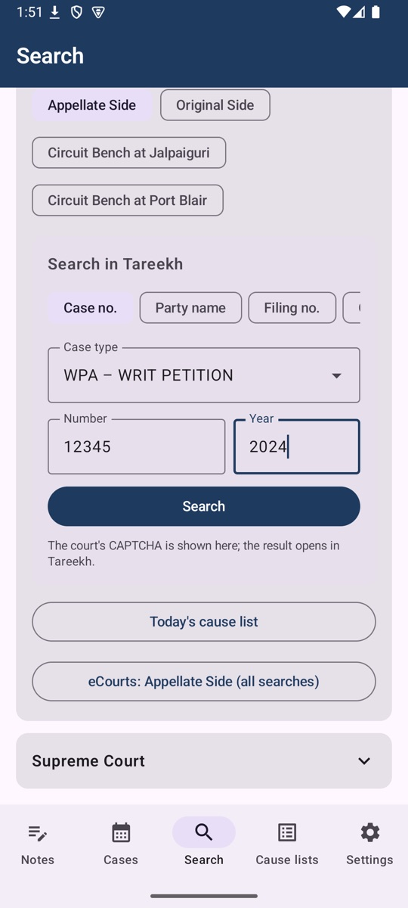
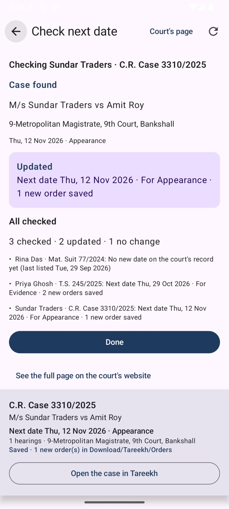
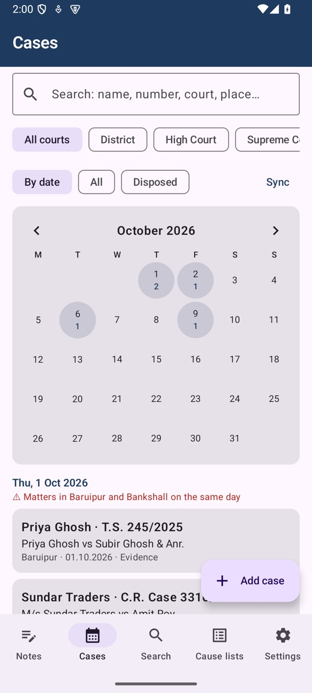
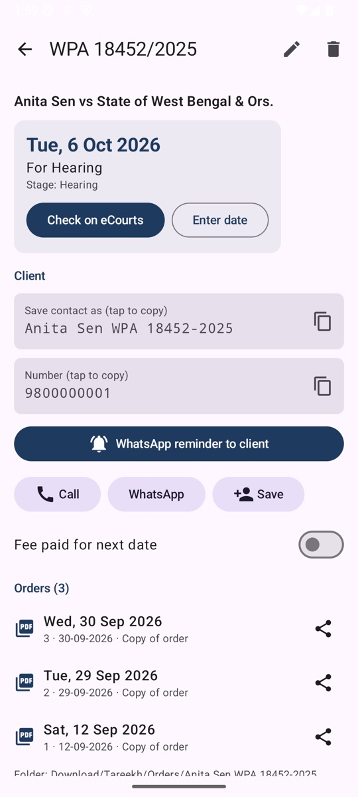
Case AI and finding cases
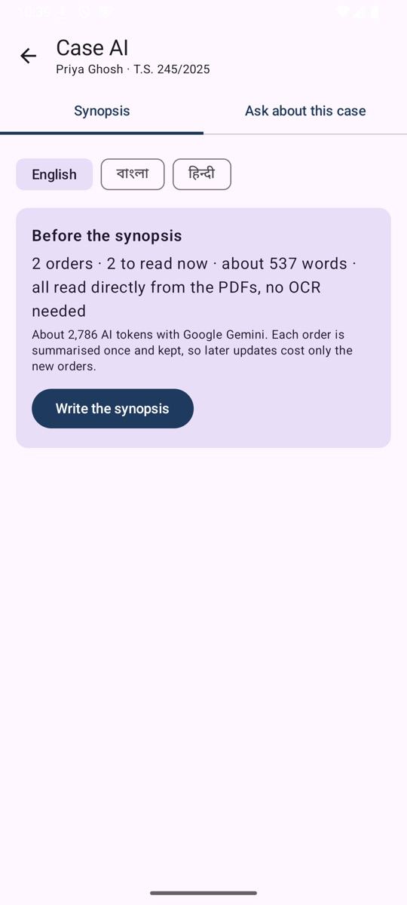
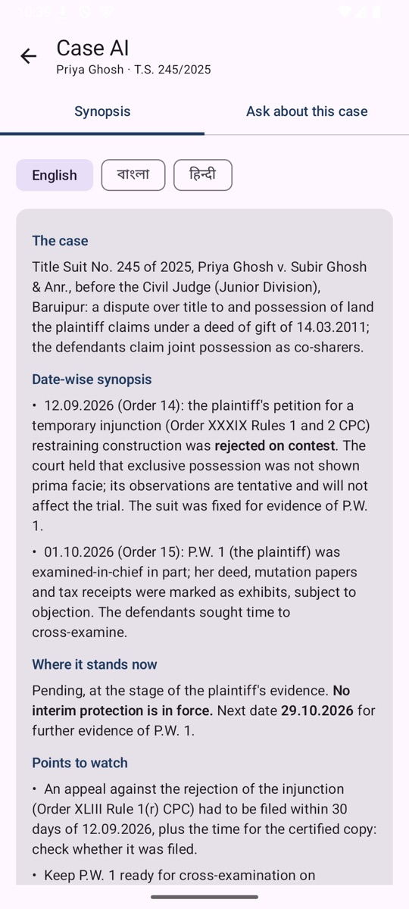
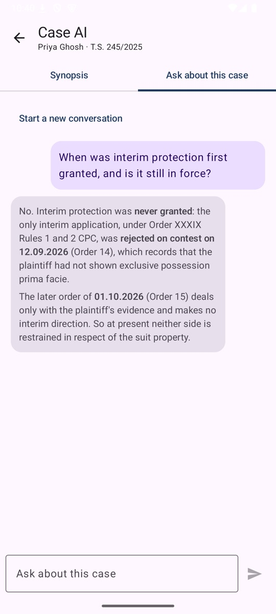
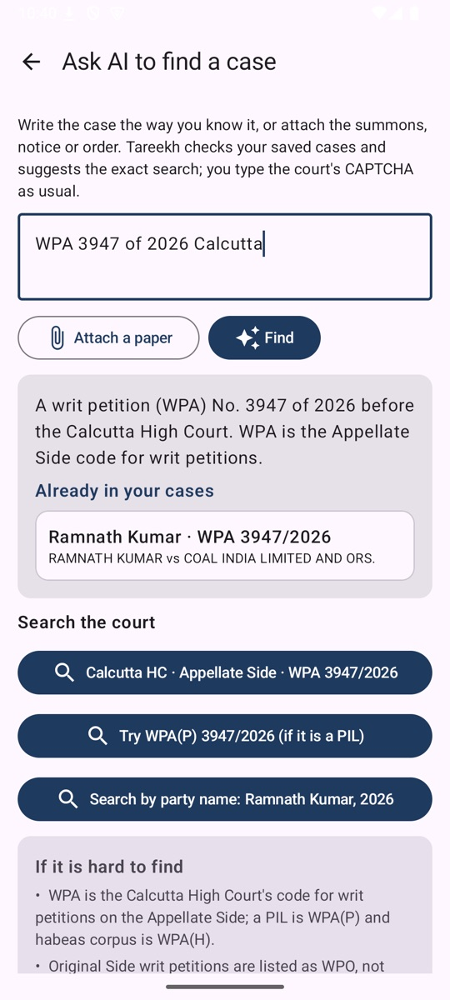
Court orders with AI
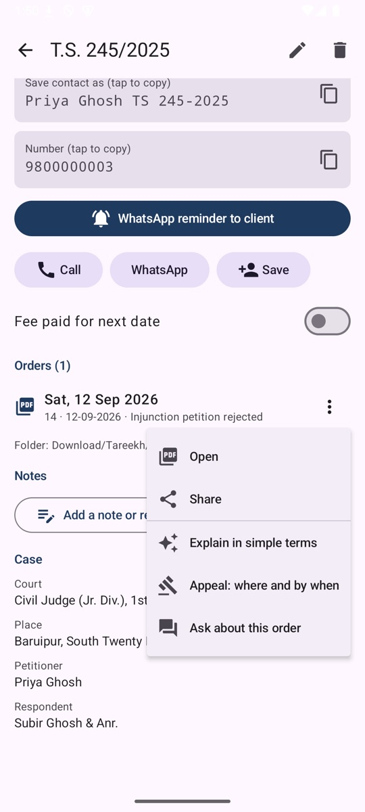
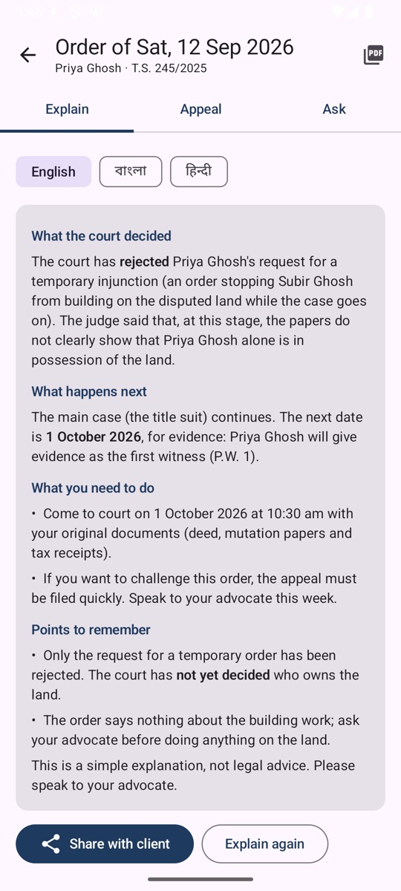
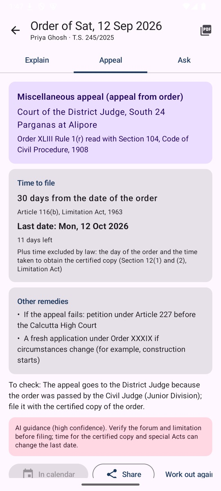
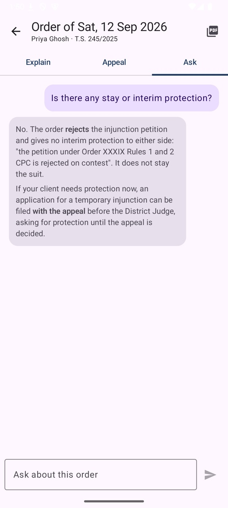
Every day
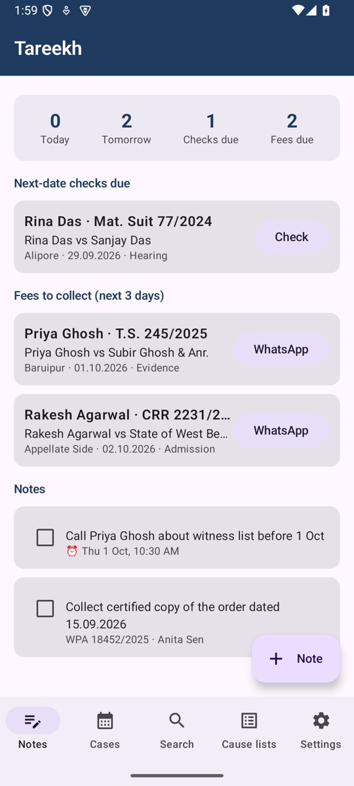
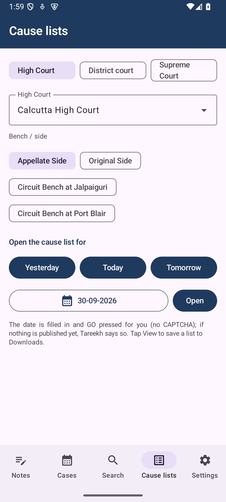
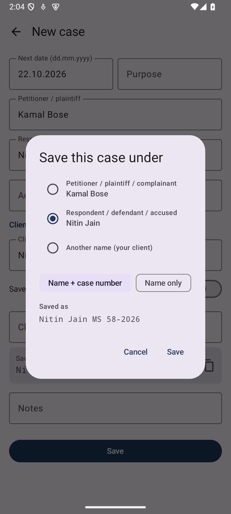
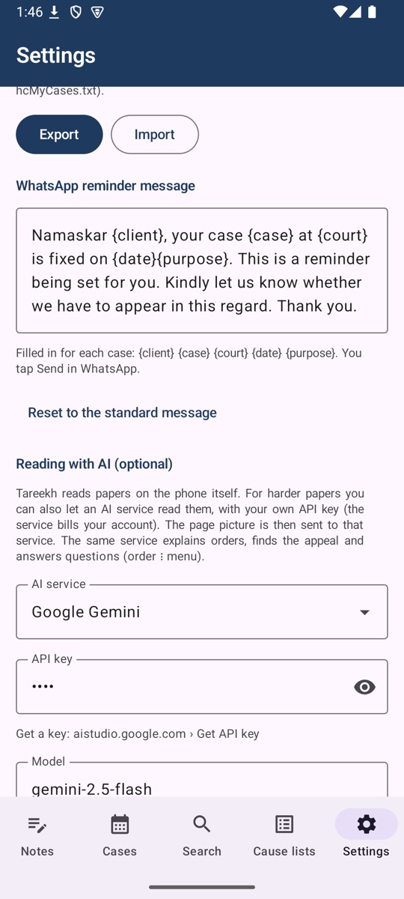
The full screen guide, with numbered arrows on every screen, and the illustrated notes for each version:
Questions
What is Tareekh?
Tareekh is a free Android case diary for advocates in India. It keeps every matter you appear in, in any district court, the 25 High Courts and the Supreme Court, finds each next date on the courts' public case-status pages, saves every court order on your phone, and reminds you of hearings, fees and deadlines.
Which courts does Tareekh support?
District courts of every state through eCourts, all 25 High Courts with their 45 benches and sides (Appellate Side, Original Side and circuit benches), and the Supreme Court of India.
Does Tareekh solve the court's CAPTCHA?
No. The court's CAPTCHA is always typed by you. Tareekh fills in the rest of the court's public search form out of sight and shows only the CAPTCHA picture on its own screen; the case is then updated from the court's answer.
Can I read court orders without internet?
Yes. Once a case is saved, all its orders are downloaded into a folder for that case (Download/Tareekh/Orders) and open any time, even offline. New orders are added at every check.
Can Tareekh explain an order or tell me where to appeal?
Yes, with an AI service you connect using your own API key (Google Gemini, OpenAI, Claude, Qwen or Kimi). It explains an order in simple English, Bengali or Hindi, works out where an appeal lies and the last date to file, and answers questions about the order. Appeal guidance must be verified before filing.
How does Tareekh keep AI costs low?
Each order is read on the phone, straight from the PDF (OCR only for scanned pages), cleaned and indexed on the phone. A question sends only the few passages that match it; a synopsis summarises each order once and keeps the summary, so later updates cost only the new orders. The cost is shown before a synopsis runs.
Is Tareekh free, and is my data private?
Tareekh is free to download and use for your own practice. Cases, notes and orders stay on your phone; nothing is sent to the developer. Only if you connect an AI service is a document you ask about sent to that service, under your own key.
Is Tareekh an official eCourts or court app?
No. Tareekh is made by Patra's Law Chambers and is not affiliated with eCourts, NIC or any court. It works with the courts' public case-status pages.
Privacy
Cases, notes and orders stay on your phone; nothing is sent to Patra's Law Chambers or anyone else. Tareekh works with the public case-status pages of eCourts, the High Courts and the Supreme Court, and you type every CAPTCHA: it is never bypassed. Only if you connect an AI service is anything sent out: the picture of a paper you share, or an order you ask about, goes to the service you chose, under your own API key and your own account. Settings › Export saves a backup file to keep in Google Drive.
About
Designed and built by Advocate Sudip Patra, Founder & Managing Partner, Patra's Law Chambers: a litigation practice in Kolkata and New Delhi, before the Supreme Court of India, the Calcutta High Court and tribunals including the CAT, AFT, DRT/DRAT and NCLT. Tareekh grew out of his daily practice at the Calcutta High Court.
| Kolkata | NICCO House, 6th Floor, 2 Hare Street, Kolkata 700001 |
| New Delhi | 4455/5, 1st Floor, Gali Shahid Bhagat Singh, Paharganj, New Delhi 110055 |
| Phone / WhatsApp | +91 890 222 4444 |
| Website | patraslawchambers.com · About us · Contact |